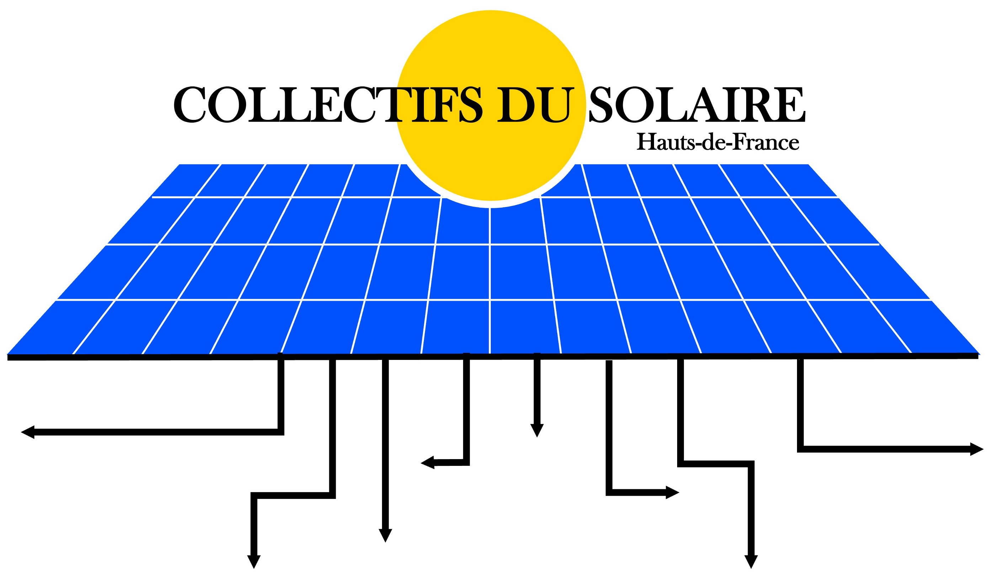

Démonstrateur Autoconsommation Collective
Conception et développement d'un démonstrateur web servant d'outil marketing pour l'association. L'objectif est de promouvoir le projet et de mobiliser les citoyens souhaitant rejoindre la boucle locale en vue du déploiement de la future application finale.
Développement complet de la plateforme, comprenant une interface vitrine informative ainsi qu'un tableau de bord d'administration dédié à la gestion des boucles énergétiques. L'ensemble de l'application a fait l'objet d'un déploiement en ligne sécurisé.